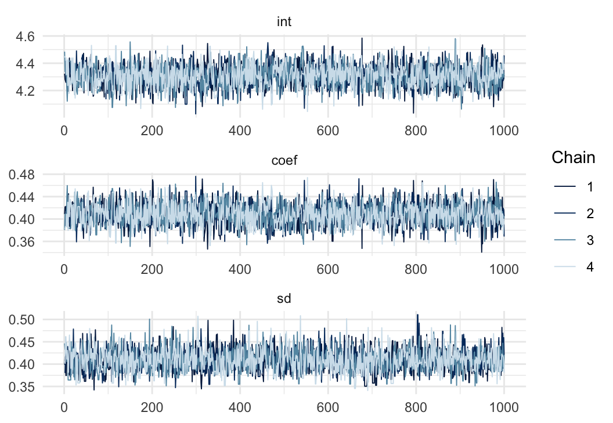

simple and scalable statistical modelling in R
simple and scalable statistical modelling in R
simple
scalable
extensible
Here’s a Bayesian linear regression model for the iris data using greta:
x <- iris$Petal.Length
y <- iris$Sepal.Lengthlibrary(greta)
int <- normal(0, 5)
coef <- normal(0, 3)
sd <- lognormal(0, 3)
mean <- int + coef * x
distribution(y) <- normal(mean, sd)m <- model(int, coef, sd)draws <- mcmc(m, n_samples = 1000, chains = 4)
bayesplot::mcmc_trace(draws)